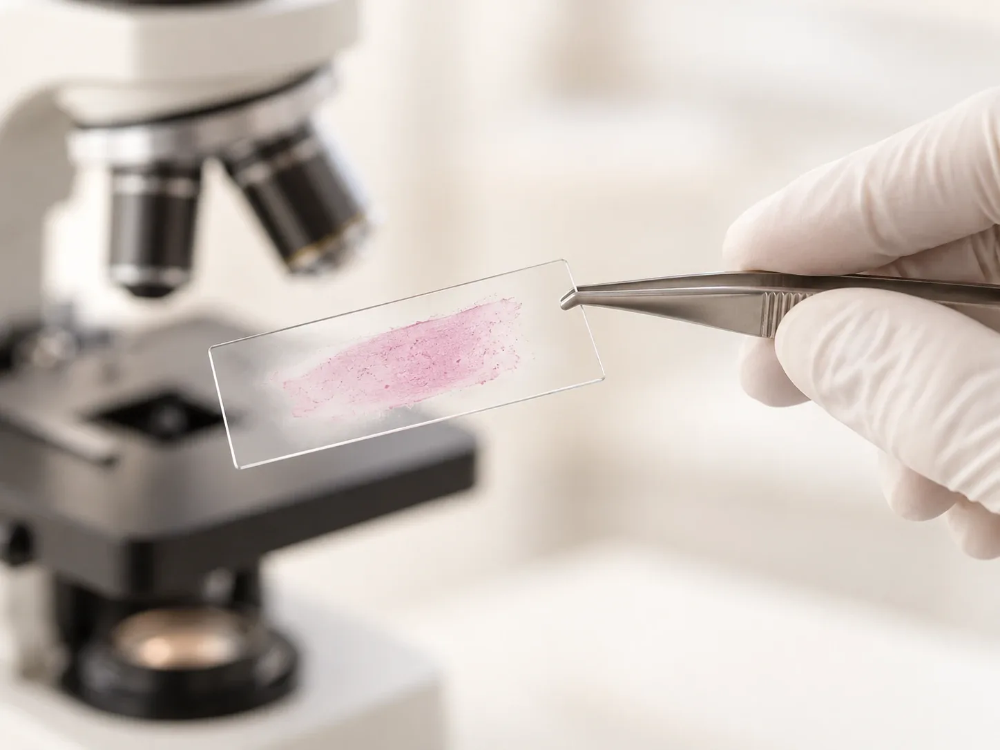

МаксимовМаксим Леонидович
Врач-терапевт · клиническая фармакология
Терапия, клиническая фармакология, безопасность и коррекция лекарственной терапии
- Опыт
- более 25 лет
Самочувствие и лечение
Самый частый анализ: эритроциты, гемоглобин, лейкоциты, тромбоциты, СОЭ. С него обычно начинают обследование.
Общий анализ крови назначает врач клиники и объясняет результат. Приём терапевта — 5 000 ₽.

Общий анализ крови — самое частое исследование. Он показывает, сколько в крови эритроцитов, гемоглобина, лейкоцитов и тромбоцитов, и скорость оседания эритроцитов (СОЭ). Общий анализ крови назначает врач клиники 8.0.8 в Москве, у метро «Римская». Записаться на приём можно ежедневно с 9:00 до 21:00.
С него обычно начинают обследование: при слабости, температуре, частых простудах, на профилактическом осмотре и перед лечением. Анализ не ставит диагноз, но подсказывает врачу, куда смотреть дальше.
Его ещё называют клиническим анализом крови. Бывает общий анализ без лейкоцитарной формулы и развёрнутый, с формулой. Какой вариант нужен вам, решит врач.
Стоимость анализа, подготовку и сроки уточнит администратор. Приём терапевта — 5 000 ₽: врач назначит нужные анализы и разберёт результаты.
На разборе результатов врач объяснит:
Общий анализ крови назначают часто, потому что он простой и многое показывает. Вот частые поводы:
Общий анализ крови изучает клетки крови: эритроциты, лейкоциты, тромбоциты. Биохимический анализ показывает, как работают обмен веществ и внутренние органы: глюкоза, холестерин, печёночные и почечные показатели.
Эти анализы не заменяют друг друга. Часто врач назначает их вместе, но какой нужен вам, зависит от жалоб и задачи.
Нормы зависят от лаборатории, пола и возраста, поэтому на бланке всегда указаны свои референсные значения. Отметка «выше» или «ниже» нормы — повод показать анализ врачу, а не ставить себе диагноз.
Небольшие отклонения часто бывают у здоровых людей, а показатели в норме не исключают болезни. Врач смотрит на анализ вместе с жалобами, осмотром и прежними результатами.
Врач-терапевт · клиническая фармакология
Терапия, клиническая фармакология, безопасность и коррекция лекарственной терапии

Врач-терапевт
Диагностика, лечение и профилактика заболеваний внутренних органов; бронхолёгочные заболевания
Стоимость, подготовку и сроки уточнит администратор. Приём терапевта — 5 000 ₽: врач назначит анализы и разберёт результат.
По телефону +7 (995) 656-33-96, ежедневно с 9:00 до 21:00. Сначала назначается приём врача.
Начните с приёма врача в клинике 8.0.8: Москва, ул. Сергия Радонежского, 15–17, стр. 2, этаж 1. Рядом станции метро «Римская» и «Площадь Ильича». Где и когда сдать анализ, подскажет администратор.
Гемоглобин, эритроциты, лейкоциты и лейкоцитарную формулу, тромбоциты и СОЭ. По ним врач видит признаки анемии, воспаления, инфекции и нарушений свёртывания.
Обычно да, утром через 8–12 часов после еды. Еда влияет на некоторые показатели, например на лейкоциты.
Иногда можно, если так согласовал врач. Но повторные анализы сдавайте в одно и то же время суток, чтобы результаты можно было сравнить.
Так часто, как назначит врач. Для контроля лечения его иногда повторяют через несколько дней или недель, для профилактики реже.
Чаще всего воспаление, но СОЭ повышается и при анемии, беременности, с возрастом. Сама по себе она не указывает причину, поэтому её оценивает врач.
Если гемоглобин ниже нормы лаборатории, обычно это анемия. Но причины у неё разные, и лечение зависит от причины. Поэтому врач может назначить ферритин, витамин B12 и другие анализы.
Посмотреть отметки на бланке можно, но выводы делает врач: он учитывает жалобы, лекарства и прежние результаты.
Имеются противопоказания. Необходима консультация специалиста.